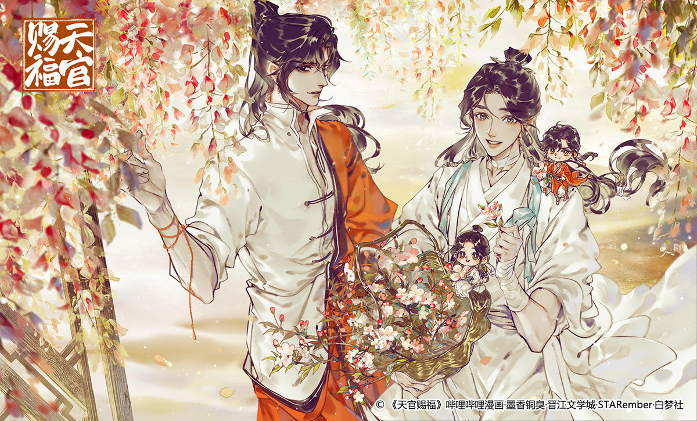

❛❛ Your Highness, I am forever your most devoted believer.
Hua Cheng and Xie Lian under flower blossoms
About Hua Cheng
Hua Cheng, also referred to as San Lang, is the deuteragonist and main love interest in Heaven Official's Blessing.
Hua Cheng
He possesses an extremely powerful shape-shifting ability not even gods can see through. It's said that no one has ever seen his true form because he transformed so often.
He is charismatic and intelligent, with a nonchalant attitude. He cares little for others and mostly acts in his own best interest. Despite being a ghost king, he is not outright evil, seemingly neutral as he neither undertakes altruistic actions nor engages in evil or barbaric acts.
Hua Cheng and Xie Lian gathering flowers
Characteristics
- He is very dedicated and loyal to Xie Lian.
- His symbolic animal is a fox.
- He is interested in artefacts but does not care much about them.
Mid-Autumn festival
Hua Cheng's relationships
A look at the relationships he forms with the other characters. He is able to form connections with people but due to his power, he is feared by the heavenly officials. He is well respected and admired by the citizens of the Ghost City.
Click on these links to go to their respective pages
- Xie Lian
- Shi Qingxuan
- Yin Yu
- E-Ming
- He Xuan